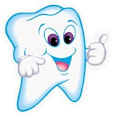
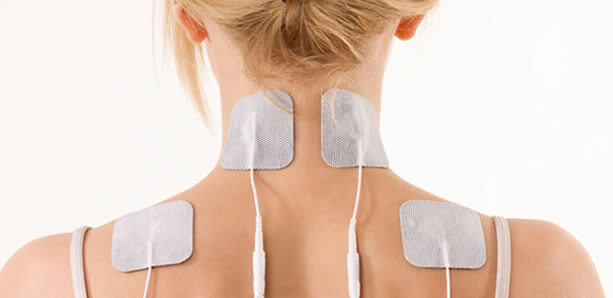
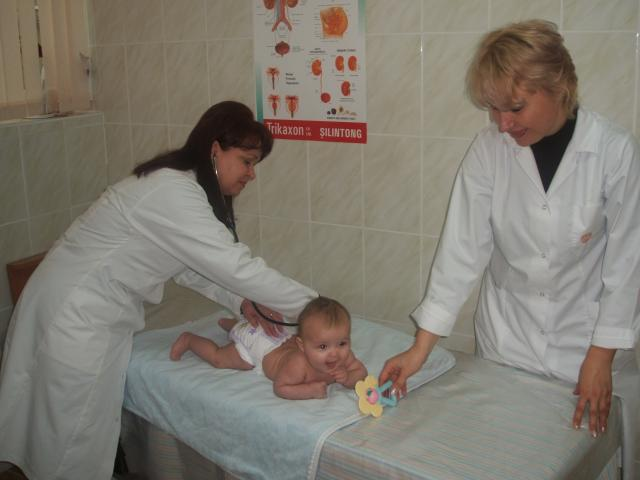

- asistenţă medicală primară (AMP)
- asistenţă medicală specializată de ambulatoriu
- îngrijiri medicale comunitare și la domiciliu
- asistenţă medicală de urgență la etapa prespitalicească
- serviciile medicului de familie
- servicii de tratament și profilactice
- servicii în educație pentru sănătate
Servicii CSP Crihana Veche
În cadrul instituției sunt prestate următoarele servicii:
Servicii medicale profilactice
În scopul prevenirii îmbolnăvirilor, al depistării precoce a bolii şi al păstrării sănătăţii, asiguraţii, direct sau prin intermediul medicilor cu care casele de asigurări se află în relaţii contractuale, vor fi informaţi permanent de către casele de asigurări asupra mijloacelor de păstrare a sănătăţii, de reducere şi de evitare a cauzelor de îmbolnăvire şi asupra pericolelor la care se expun în cazul consumului de droguri, alcool şi tutun.
Serviciile medicale profilactice suportate din fond sunt următoarele:
• Monitorizarea evoluţiei sarcinii, indiferent de statutul de asigurat al femeii; • Urmărirea dezvoltării fizice şi psihomotorii a sugarului şi a copilului; • Controalele periodice pentru depistarea bolilor ce pot avea consecinţe majore în morbiditate şi mortalitate; • Servicii medicale din cadrul programului naţional de imunizări; • Servicii de planificare familială, indiferent de statutul de asigurat al femeii.
Serviciile medicale stomatologice

• Trimestrial, pentru copiii până la vârsta de 18 ani, individual sau prin formarea de grupe de profilaxie, fie la grădiniţă, fie la instituţiile de învăţământ preuniversitar; • De două ori pe an, pentru tinerii în vârstă de la 18 ani până la 26 de ani, dacă sunt elevi, ucenici sau studenţi şi dacă nu realizează venituri din muncă. Asiguraţii în vârstă de peste 18 ani au dreptul la control medical pentru prevenirea bolilor cu consecinţe majore în morbiditate şi mortalitate, în condiţiile stabilite prin contractul-cadru.
Servicii în educație pentru sănătate

Educația pentru sănătate - este un sistem care include conștiința stării de sănătate, procesul de predare/ învatare, participare.
Educația pentru sănătate are urmatoarele scopuri:
• Ridicarea nivelului de cunoștințe medicale ale populatiei, în principal în domeniul sanogenezei, protecția mediului și prevenției bolilor; • Formarea ți dezvoltarea unor deprinderi corecte care să promoveze sănătatea; • Crearea unei poziții active față de sănătatea individuală și față de problemele sănătatii publice, în sensul atragerii și capacitării maselor la participarea activă în realizarea consolidarii sănătății. • Educația pentru sanatate este diferița de educația sanitară care vizează igiena personală.
Serviciu de fizioterapie

Este una dintre cele mai bune si mai eficiente metode de prevenire, dar si recuperare a unei game largi de afectiuni, fiind in totalitate o metoda naturala care nu prezinta efecte adverse, astfel nefiind riscanta pentru pacienti. Singura conditie este aceea de a fi aplicata corespunzator de catre personalul medical avizat.
Beneficii
• Creste mobilitatea articulatiilor si le mentine sanatoase cat mai mult timp. Fizioterapia are reale efecte vasodilatatorii si trofice, ducand la cresterea mobilitatii articulatiilor. • Are efect antiinflamator si antialgic, fiind o metoda foarte buna de prevenire, dar si de tratare a inflamatiilor existente in urma unui traumatism. In plus, amelioreaza sau reduce durerile existente. • Procedurile de fizioterapie pot avea asupra organismului o actiune benefica de relaxare, ducand la diminuarea insomniei si favorizand somnul. De asemenea, acestea diminueaza nivelul de stres din organism si combat oboseala psihica si fizica. • Reduce simptomele suparatoare precum dureri musculare, inflamatie, contractura, stimuleaza circulatia sanguina si, prin urmare, stimuleaza repararea celulara, favorizeaza drenajul limfatic, reduce deficiente functionale, amelioreaza cicatricile si vergeturile inestetice, tonifiaza masa musculara si pielea, ajuta in tratamentul anti-celulita si este adjuvant in diverse diete de slabit, imbunatateste circulatia periferica, accelereaza vindecarea afectiunilor degenerative, creste metabolismul celular.
Asistenţă medicală primară

Echipele medicilor de familie asigură servicii medicale de prim contact, supravegherea maladiilor cronice cu impact major asupra sănătăţii publice, supravegherea gravidelor, copiilor, procesul de imunizare şi diverse activităţi profilactice.
Beneficii
• Este cea mai cost-eficientă formă de organizare a asistenţei medicale; • Oferă posibilitatea de a vedea persoana, familia, integral în sănătate şi boală; • Este medicina „de prevenire”, prin depistări active a stărilor premorbide şi a bolilor, prin educaţie sanitară şi numeroase activităţi preventive
Asistenţa medicală specializată de ambulator
Medicii specialişti din secţiile asistenţă medicală specializată asigură consultul pacienţilor, stabilesc diagnosticul şi efectuează recomandări pentru medicii de familie referitor tratamentului, supravegherii, necesităţii de internare în spital, de efectuare a expertizei incapacităţii temporare sau permanente de muncă, măsurilor de reabilitare necesare.
Serviciile acordate de către medicii specialişti:
• Consultaţia primară a medicului specialist de profil din teritoriu se acordă persoanelor asigurate în baza biletului de trimitere eliberat de către: medicul de familie, medicul specialist de profil, pentru care persoana asigurată a avut biletul de trimitere iniţial eliberat de medicul de familie; • Medicul specialist de profil, pentru cazurile cînd persoana asigurată s-a adresat direct la medicul specialist de profil cu una din maladiile stipulate în anexa nr.2 al Programului unic şi acesta constată necesitatea consultaţiilor altor specialişti de profil; • În cazul efectuării consultaţiei respective de către medicul specialist din alt teritoriu/localitate, acesta remite în mod obligatoriu medicului/instituţiei, care a trimis pacientul la consultaţie, formularul 027/e completat cu informaţia referitor la diagnosticul, rezultatele investigaţiilor efectuate, recomandările de tratament şi supraveghere, etc.